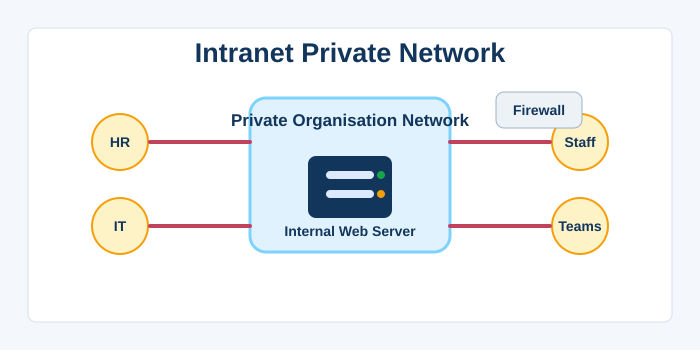
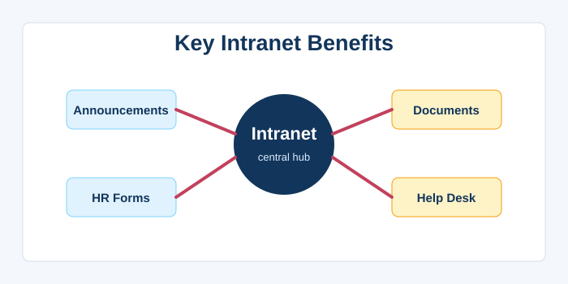
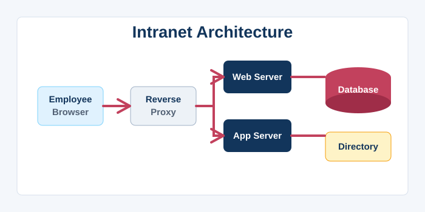
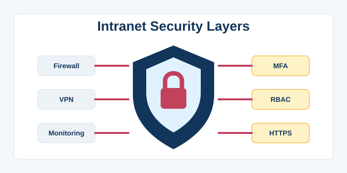
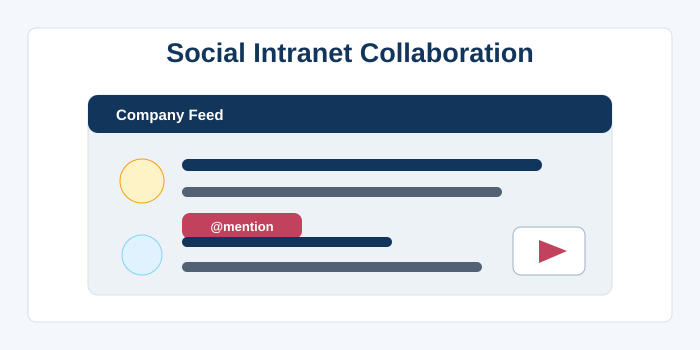
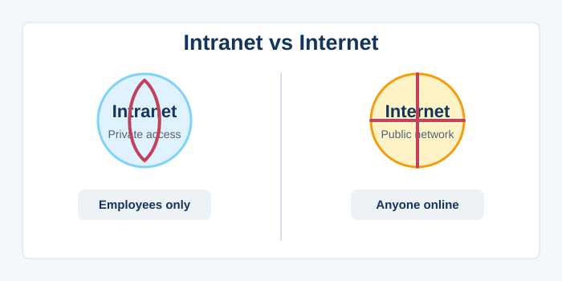
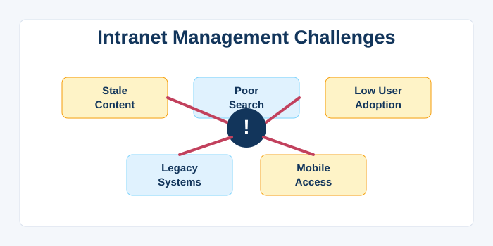
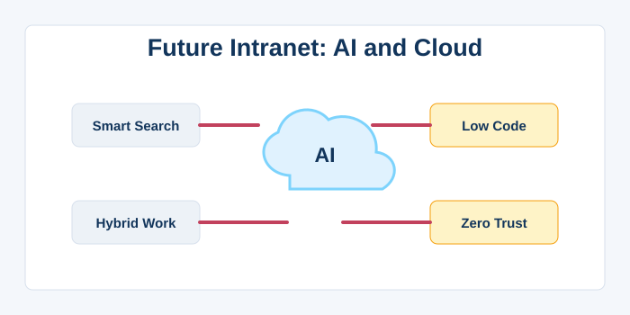

Intranet
1. Defining an Intranet
An intranet is a private, secure network that uses Internet technologies (TCP/IP, HTTP, web browsers) to share information, applications, and collaboration tools within an organisation. Unlike the public internet, an intranet is accessible only to authorised employees, contractors, or members, typically protected by firewalls and authentication systems. It serves as a centralised hub for corporate communication, document management, human resources pages, project collaboration, and internal social platforms. The term “intra” means “within,” accurately reflecting that the network stays within the organisational boundary. Intranets can range from a simple set of internal web pages running on a local server to sophisticated, portal‑based systems integrated with databases and line‑of‑business applications. They often employ the same software stacks as the web: Apache/Nginx, content management systems, and web browsers, making them familiar to users. The primary goals are to improve internal communication, reduce email overload, streamline workflows, and provide a single source of truth for policies and procedures. Because intranets are isolated, they can enforce stricter security, customise access levels, and include sensitive data that must never leave the corporate environment. Modern intranets often integrate with cloud‑based identity providers for single sign‑on (SSO) and may extend to mobile devices via VPN. In essence, an intranet is a private internet that leverages the open web’s technologies for internal efficiency and control.

2. Key Characteristics and Benefits
The defining characteristic of an intranet is its restricted access: only users on the organisation’s private network or connected via secure VPN can reach it. This seclusion allows companies to host confidential data—financial reports, employee records, strategic plans—without exposing them to the public internet. Intranets centralise information, making it easy for staff to find the latest HR forms, IT help desk links, or company announcements. They often feature powerful search engines that index internal documents, wikis, and databases, solving the problem of scattered information. Collaboration is enhanced through team spaces, discussion forums, shared calendars, and real‑time document editing, sometimes integrated with platforms like SharePoint or Confluence. Workflow automation is another major benefit: expense approvals, leave requests, and purchase orders can be routed electronically, reducing paperwork and delays. Intranets can improve employee onboarding by providing a structured learning path and access to training materials. They also support organisational culture by featuring news feeds, employee recognition boards, and CEO blogs. Because they are built on standard web technologies, development and maintenance costs are lower than for custom legacy systems, and training is minimal. Ultimately, a well‑designed intranet becomes the digital nervous system of an organisation, connecting people to the information and tools they need to do their jobs effectively.

3. Intranet Architecture and Components
At its core, an intranet relies on the same client‑server model as the internet: employees use web browsers to access pages hosted on internal web servers. The network infrastructure typically includes routers, switches, firewalls, and VPN concentrators to ensure secure, high‑speed connectivity. The web server software (Apache, Nginx, IIS) serves static and dynamic content, often behind a reverse proxy for load balancing and security. Content management systems like Microsoft SharePoint, Drupal, or WordPress form the backbone, allowing non‑technical staff to publish and organise content. Database servers (SQL Server, MySQL, PostgreSQL) store structured data, such as employee directories, timesheets, and project metrics. Application servers run business logic, often connecting to enterprise systems like ERP, CRM, and HRIS via APIs. Centralised authentication—Active Directory, LDAP, or SAML—enables single sign‑on and role‑based access control, ensuring users see only what they are authorised to see. Search engines (Elasticsearch, Solr) index content across multiple repositories to provide a Google‑like search experience. Wikis and document management systems (Alfresco, Nuxeo) handle versioning and collaboration. Email integration, event calendars, and messaging platforms (Teams, Slack) are often woven into the portal. A robust backup and disaster recovery plan is essential because the intranet holds critical business data. This architecture, while complex, uses standards‑based, commodity components, making it scalable and adaptable.

4. Security Considerations
Security is paramount for an intranet because it houses an organisation’s most sensitive information. The first layer of defence is network segmentation: the intranet resides behind firewalls that block all unsolicited inbound internet traffic. Virtual Private Networks (VPNs) encrypt traffic from remote employees, creating a secure tunnel into the intranet. Multi‑factor authentication (MFA) adds an extra verification step beyond passwords, mitigating credential theft. Role‑based access control (RBAC) ensures that users can read or modify only the documents and applications relevant to their job. Data Loss Prevention (DLP) systems monitor and block attempts to exfiltrate sensitive information, such as copying files to USB drives or sending them via webmail. Regular security audits and penetration testing help identify vulnerabilities in web applications that could be exploited by malicious insiders or compromised accounts. HTTPS must be enforced inside the intranet to prevent eavesdropping on wired or Wi‑Fi networks, even inside the building. Acceptable use policies and monitoring tools detect anomalous behaviour, like large downloads outside business hours. All software and operating systems must be patched promptly, as internal systems can be targeted by malware that breaches the perimeter via email attachments. Physical security of servers, switches, and backup media is equally critical; a locked server room with camera surveillance is a must. By layering these controls, organisations can maintain the confidentiality, integrity, and availability of their intranet resources.

5. Social Intranets and Internal Communication
Modern intranets have evolved from static bulletin boards into dynamic social workspaces that mimic the best features of public social media. User profiles, activity streams, and @mentions enable employees to connect across departments and geographies. Internal blogs and forums give subject‑matter experts a platform to share knowledge, reducing the “email the expert” syndrome. Company‑wide announcements, polls, and pulse surveys foster transparency and give leadership insight into employee sentiment. Gamification elements, like points and badges for contributions, can boost engagement and encourage content creation. Project spaces allow teams to share files, track tasks, and discuss progress in one central location, reducing reliance on long email chains. Integration with chat platforms (Microsoft Teams, Slack) brings notifications and updates directly into the flow of daily work. Video portals host CEO town halls, training recordings, and team celebrations, humanising remote work. However, social features also bring challenges: moderating discussions, preventing information overload, and ensuring content remains professional and inclusive. Balancing open communication with the need for focused work requires thoughtful governance. When done right, a social intranet breaks down silos, accelerates innovation, and builds a strong sense of community within the workforce.

6. Intranet vs. Internet: Side‑by‑Side
While an intranet uses the same protocols and technologies as the Internet, the two serve entirely different purposes and audiences. The internet is a global, public network connecting billions of devices, whereas an intranet is a private network confined to a single organisation. Access to the internet is generally open to anyone with a connection; an intranet requires authentication and is often unreachable from outside. Content on the internet is searchable by engines like Google, but intranet content is invisible to external search engines, leading to the term “deep web.” The internet thrives on advertising and monetisation; intranets focus on internal productivity and operational efficiency. Internet applications must scale to millions of users; intranets typically serve thousands or fewer. Security threats differ: internet‑facing systems must defend against a global army of attackers, while intranets have a smaller threat surface but face higher stakes if sensitive corporate data leaks. Internet bandwidth can be unpredictable, while intranets operate over high‑speed, reliable local networks with low latency. Internet regulations (like GDPR) apply to any public‑facing data; intranets face internal compliance rules and may be subject to industry standards like HIPAA or SOX. Despite these differences, the line blurs as companies adopt cloud‑based intranet solutions (like SharePoint Online) that are technically hosted on the public internet but secured behind authentication. Understanding these distinctions helps organisations choose the right architecture for internal vs. public‑facing digital capabilities.

7. Challenges in Intranet Management
Designing and maintaining a successful intranet is far from trivial, and many organisations struggle with user adoption and content rot. The “if you build it, they will come” fallacy often leads to intranets that are outdated, hard to navigate, and ignored by employees. Governance is a major challenge: without clear ownership, stale content accumulates, search results become irrelevant, and trust erodes. Poor information architecture and lack of search optimisation make finding documents frustrating, prompting users to fall back on email. The intranet must be mobile‑responsive, as field workers and remote staff access it from phones and tablets. Integration with legacy systems (like 30‑year‑old HR databases) can be complex and expensive. Balancing the need for control (strict permissions, approval workflows) with the desire for openness and fast publishing is a constant tension. Training and change management are required to shift employee habits from email attachments to collaborative document sharing. Measuring intranet ROI is difficult; metrics like page views and time on site don’t directly translate to productivity gains. Regular user feedback, analytics, and iterative redesigns are essential to keep the intranet aligned with changing business needs. Despite these challenges, organisations that invest in user‑centred design and a dedicated intranet team reap significant rewards in knowledge sharing, employee engagement, and operational efficiency.

8. The Future of Intranets
The intranet of the future is increasingly shaped by cloud computing, AI, and the shift to hybrid work. Many organisations are migrating from on‑premises intranet servers to cloud‑based services like SharePoint Online, Microsoft Viva, or Google Workspace, which offer seamless updates and global accessibility. Artificial intelligence powers smart search that understands natural language and context, recommending documents and experts based on the user’s role and current task. The digital workplace concept blends intranet, collaboration tools, and business applications into a unified, personalised dashboard, accessible from any device. AI‑driven analytics provide insights into content engagement, network health, and even employee well‑being through sentiment analysis. Low‑code/no‑code platforms empower citizen developers to build intranet applications without waiting for IT, accelerating automation. The intranet is merging with the broader ecosystem of enterprise social media, video portals, and virtual reality meeting spaces for immersive collaboration. Security hardening involves zero‑trust architectures where every request, even from inside the network, must be verified. Sustainability is gaining focus, with design choices that reduce the energy footprint of internal servers. However, the core mission remains unchanged: to connect employees with the information and people they need, fostering a responsive, informed, and productive workforce. As work becomes more distributed, the intranet will continue to be the digital front door to company culture and knowledge.
